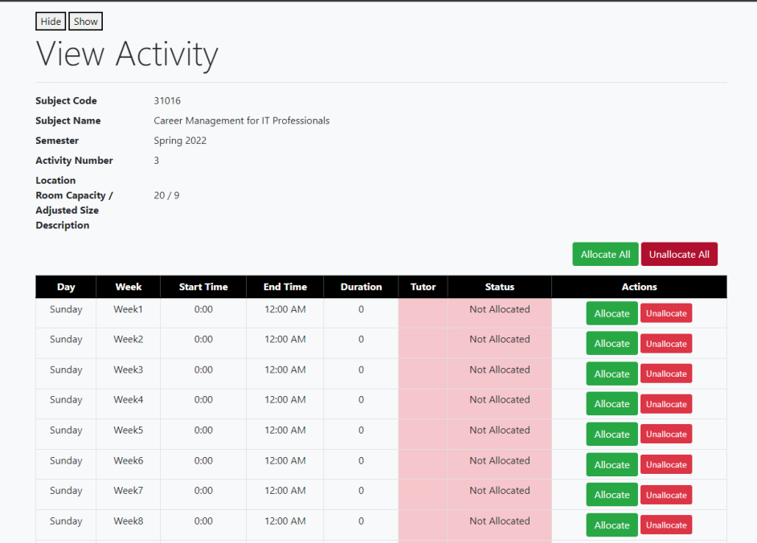

PROJECTS
UTS Scheduling Assistant Tool
| Development Period | September 2022 - November 2022 |
|---|---|
| Relevant Skills |
|
| Collaborators |
|
The UTS Scheduling Assistant Tool (UTS SAT) is a website tool for UTS tutors to manage and schedule classes. I participated in this project as part of the university subject 41113 Software Development Studio at UTS.
In this subject, students formed groups and were tasked with working on a real software project. In my case, our group worked on developing UTS SAT with supervision from the product owner, Timothy Boye. The development had been handed over to us from a previous team who had also worked on the software during Software Development Studio.
Our group followed agile practices and participated in fortnightly sprints and weekly scrum and client meeting. We used Jira to manage and observe our workflow, and utilised its features such as the Kanban board and burndown chart. We used Confluence to manage documents and reports, and record user stories, meeting minutes, and sprint retrospectives.
For this project, I assumed the role of systems tester, which included QA testing and writing detailed bug reports. In my bug report, each issue had a brief description, steps to reproduce the bug, the outcome of following those steps, and the expected outcome without issues. After finding bugs, I was responsible for communicating them to relevant teammates in order to resolve them.
